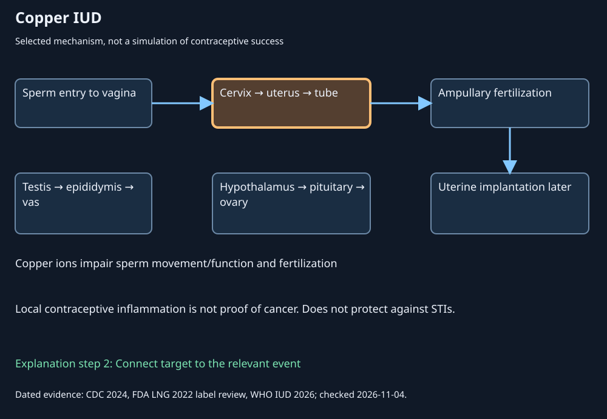
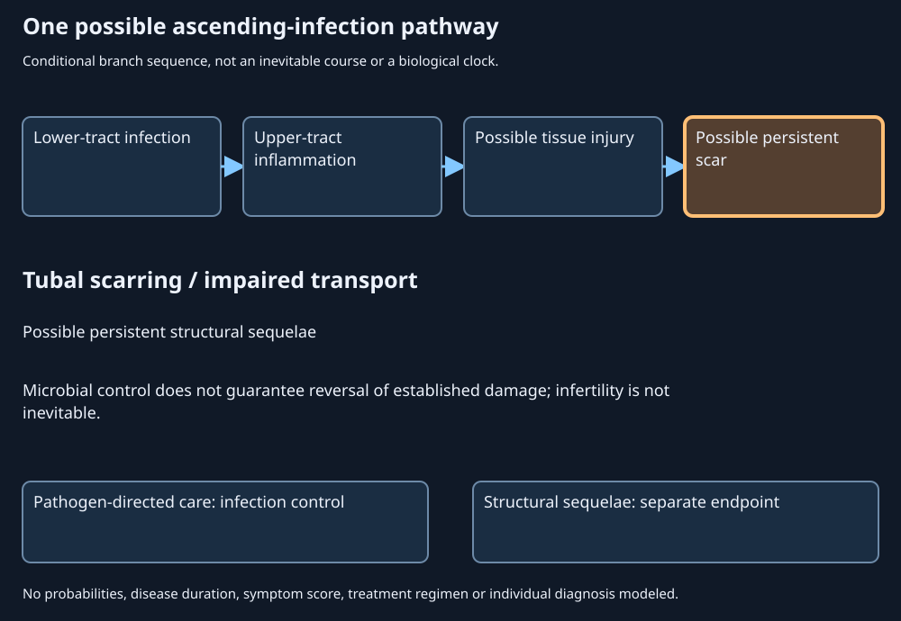
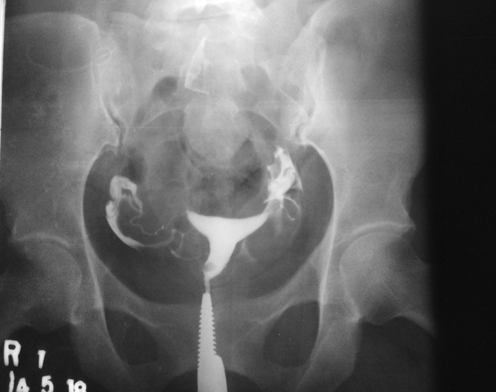

21. Contraception, assisted reproduction and reproductive health
A fertility service reports that half of its transfers led to a live-birth delivery. Another report says that only 27% of cycles started reached that endpoint. Those statements can describe the same cohort. Meanwhile, a contraceptive method described as “permanent” can still have a small nonzero failure rate, and a hormone that increases circulating testosterone can suppress sperm production. The apparent contradictions disappear when the target, accounting boundary and outcome are specified.
Reproductive interventions act on different processes: gamete production, transport, fertilization, implantation, an established pregnancy or the treatment of a disease. A diagram showing these processes in sequence is useful only if it preserves their differences. Moving an embryo into the uterus is not the same as achieving implantation; suppressing a pathogen is not the same as reversing a tubal scar; finding an abnormal screening result is not the same as diagnosing cancer.
This chapter builds on the separate gamete, duct and endocrine routes of Chapters 18–20. It explains contraception and assisted reproduction, then uses selected disorders to show why a symptom, an anatomical change, a laboratory marker and a treatment endpoint cannot be substituted for one another. Six worked problems develop conditional probability, denominator effects and evidence appraisal without turning a teaching construction into an individual medical predictor.
Official lecture spine: L48–50, all 50 assigned topics and closing activities. Medical and regulatory sources were checked on 4 November 2026. Dates, jurisdictions and access limits accompany consequential claims. Source statements of universal 100% effectiveness, a fixed calendar-safe interval, generic testosterone treatment for infertility and medication abortion becoming impossible after 10–12 weeks are corrected explicitly. No dosing or procedural instructions are supplied.
21.1 Contraceptive mechanisms and the meaning of effectiveness
L48 01:49–21:53: contraception, barriers, endocrine methods, IUDs and permanent methods.
Locate the target before comparing methods
Contraception prevents pregnancy. Methods differ in the biological step they influence and in whether their use is ongoing, event-related or intended to be permanent. These distinctions concern both mechanism and practical context. A method that is highly effective against pregnancy need not protect against sexually transmitted infections, or STIs. The relevant question is not merely “does it work?” but “against which endpoint, in which population, under what use conditions and over what interval?”
The ordinary reproductive route supplies the spatial framework. Sperm enter the vagina, traverse cervical mucus and the uterine cavity, and can reach the uterine tube. An ovulated cumulus–oocyte complex is picked up near the ovary; fertilization most often occurs in the tubal ampulla. An early embryo subsequently reaches the uterine cavity, where implantation may occur. Hormones regulate events through blood-borne signaling, while gametes travel through reproductive spaces. A hormonal vaginal ring therefore does not need to plug the vagina to influence ovulation.
External condoms place a physical barrier around the penis; internal condoms form a barrier within the receiving genital tract. Cervical caps and diaphragms act near the cervix. These are distinct devices, not interchangeable sources of STI protection. Appropriate condom materials can reduce exposure to pathogens carried in genital fluids, while infections transmitted from uncovered skin can still occur. “Barrier” describes a mechanism, not universal complete protection. A diaphragm's pregnancy-prevention role does not establish the same STI evidence as a latex condom.
Spermicides are locally acting chemical agents that impair sperm. Their effectiveness and irritation profile depend on formulation and use. A local chemical effect does not imply that the product protects against HIV or every other STI. Nor does adding a spermicide automatically make two methods statistically independent: shared use errors and material interactions can matter. The lecture's unspecified claim that silicone barriers release toxic metals and cause cancer is omitted because neither the product nor supporting material-specific evidence is established. This disposal does not certify every unregulated or contaminated product as safe.
Fertility-awareness methods use observations or rules about the fertile portion of a cycle. A calendar estimate is not the same as observing ovulation, and the future cycle length is not known at the start of a cycle. Variation in ovulation timing and survival of sperm across several days defeat an invariant “first 7–10 days are safe” assertion. Withdrawal attempts to avoid deposition of semen before ejaculation; it is sensitive to timing and does not provide reliable STI protection. These mechanisms can be described without offering a personal safe-day or sexual-practice algorithm.
Endocrine signals change events at a distance
Combined hormonal contraceptives contain estrogenic and progestogenic components. A progestin is a synthetic compound with progesterone-like receptor activity; it is not necessarily chemically identical to progesterone. Endocrine feedback can suppress the gonadotropin activity needed for ovulation. Progestin-associated cervical-mucus changes also impede sperm transport. Different formulations and delivery routes produce different patterns of exposure and effects. A combined oral pill, progestin-only pill, implant, injection and hormonal vaginal ring should not be treated as the same product.
Depot medroxyprogesterone acetate is a long-acting injectable progestin formulation. Its sustained exposure can suppress ovulation and alter bleeding patterns. Return of fertility can be delayed after discontinuation, which is not the same claim as permanent sterility. The lecture's use of “sterility” collapses reversibility, recovery time and permanent loss of reproductive capacity into one word. No individual recovery date follows from the drug class alone.
A hormonal vaginal ring releases hormones that are absorbed through vaginal tissues. The resulting endocrine effect is separate from the ring's physical presence. Product-specific use schedules cannot be justified by saying the ring must be removed so menstrual blood can escape: a ring is not a solid occlusive stopper across the vaginal lumen. This text explains the route and corrects the mechanical fiction without prescribing a schedule.
Routine oral contraception must also be separated from levonorgestrel emergency contraception. The same molecule can occur in products with different formulations, indications and evidence. For Plan B One-Step specifically, the FDA's mechanism review concludes that it prevents or delays ovulation and has no direct effect on fertilization or implantation. It does not terminate an established pregnancy. A broad picture labeling every progestin an “implantation blocker” is therefore misleading.
Eligibility is also product-specific. Age 35 alone is not a universal prohibition on oral contraception. Smoking, vascular risk, thrombotic history, migraine characteristics, other conditions and the hormone formulation can change the balance of benefits and harms. The purpose here is to explain why such conditions matter, not to issue a personal eligibility decision. Hormonal contraception used to manage bleeding or pain also has a therapeutic endpoint separate from pregnancy prevention.
Local uterine effects and interrupted ducts
An intrauterine device, or IUD, is placed within the uterine cavity. Copper-bearing IUDs release copper ions that impair sperm movement and function and interfere with fertilization. A local inflammatory environment contributes to this contraceptive effect; inflammation in this context is not proof of cancer. Levonorgestrel-releasing IUDs have different local hormonal effects, including thickening cervical mucus, inhibiting sperm and changing endometrium. The WHO's 22 January 2026 IUD fact sheet distinguishes these mechanisms and describes bleeding changes and uncommon risks such as expulsion, perforation and insertion-associated infection. Neither type supplies STI protection. The lecture's universal copper-IUD-causes-cancer inference is not retained.
Tubal surgery interrupts the route by which sperm and an oocyte meet. Techniques differ, including occlusion and removal of tubal tissue. The ovaries need not stop ovulating or producing hormones merely because the tubes are interrupted: endocrine blood supply and the reproductive lumen are different routes. Permanent intent does not establish an absolute failure-free outcome, and surgery does not make future conception through every conceivable assisted route biologically impossible.
Vasectomy occludes the vas deferens. Testicular sperm production and Leydig-cell testosterone output are not directly removed by this ductal intervention. Sperm already distal to the occluded segment can remain, so immediate sterility cannot be inferred from a newly interrupted vas. CDC's 2024 permanent-contraception guidance requires postvasectomy semen assessment before relying on the result and records a small residual pregnancy risk even after successful clearance. The clearance boundary is more informative than counting ejaculations or assuming a cut instantly empties every downstream compartment.
No-scalpel vasectomy describes an access technique, not a particular injected polymer. Intraluminal polymer or other vas-occlusive systems are separate technologies whose approval, efficacy and reversibility depend on a specified product and trial. The lecture's universal 100% claim and its fusion of the two ideas are rejected. A reversible effect in a selected animal experiment would not establish reliable human reversibility after every duration of use.
Male endocrine contraception illustrates a different target: exogenous sex steroids can suppress hypothalamic–pituitary gonadotropins and thereby suppress spermatogenesis. That is a research strategy, not evidence that an arbitrary testosterone exposure is reliable contraception. Danazol and calcium-channel-blocker anecdotes are retained only as historical/research topics; the lecture's dose and claim of routine popular contraceptive use are not adopted. Spermatogenic suppression, adverse effects, recovery, user adherence and regulatory status each require their own evidence.

A failure percentage needs an interval and a denominator
Typical use includes the way a method is actually used in the studied context, including relevant errors or interruptions. Correct or perfect use describes consistent use as specified in the evidence definition. These are population outcome measures, not measures of a molecule's intrinsic potency. A first-year pregnancy percentage is not a per-act probability, and it is not automatically the conditional probability in year 2 among those who did not become pregnant in year 1.
| Method grouping | Pregnancies per 100 users during first year | Interpretation boundary |
|---|---|---|
| Copper IUD | 0.8 | Product/use context; not a per-act risk |
| Injectable contraception | 4 | Includes real-world use |
| Pills or hormonal ring | 7 | CDC grouping; not every formulation independently measured here |
| External condom | 13 | Pregnancy endpoint, not an STI percentage |
| Tubal surgery | 0.5 | Permanent intent, nonzero failure |
| Vasectomy | 0.15 | Clearance and follow-up matter |
The figures come from the CDC method overview and its permanent-method guidance. They summarize selected populations and definitions. If a first-year estimate is 7%, then among 1000 comparable users an expected 70 pregnancies is a population translation of that estimate, not a guarantee that precisely 70 will occur. It cannot be divided by an assumed number of sex acts to derive a biologically validated per-act probability: exposure frequency, timing, fertility and use errors are not fixed or independent.
Likewise, multiplying two failure percentages assumes a joint structure that the separate studies may not establish. If two failures share a cause, such as missed use during the same exposure, their joint probability differs from the product of their marginal probabilities. The general identity is \(P(A\cap B)=P(A)P(B\mid A)\), where \(B\mid A\) denotes conditioning on \(A\). Independence is an additional assumption, not a benefit conferred merely by calling two methods different.
Cancer associations require a specified site and comparison
The NCI's oral-contraceptive evidence summary describes observational associations with increased breast/cervical cancer risk and decreased endometrial/ovarian/colorectal risk. Duration, current or past use, formulation and baseline risk matter. Observational associations do not by themselves isolate a causal effect from confounding and selection. This evidence does not support either “all contraception causes cancer” or “every contraceptive is cancer-neutral.”
A relative association also needs an absolute baseline. Doubling a hypothetical event probability from 1 in 10000 to 2 in 10000 adds 1 event per 10000, whereas doubling it from 1 in 10 to 2 in 10 adds 1 per 10. These are original arithmetic examples, not cancer-risk estimates. The ratio is the same while the absolute consequences differ. A clinical choice cannot be reconstructed from a relative percentage stripped of its endpoint and population.
21.2 Assisted reproduction: stages, locations and selected denominators
L48 28:59–33:14: IVF sequence, uncertainty and closing activity.
Fertilization in the laboratory does not guarantee implantation
In vitro fertilization, or IVF, brings oocytes and sperm into a laboratory setting for fertilization. “In vitro” means outside the living body in a controlled laboratory environment. Ordinary fertilization usually occurs in the tubal ampulla, not the uterine endometrium. IVF changes the location of gamete interaction and can bypass some transport obstacles, but it does not eliminate the subsequent requirements for embryo development, uterine receptivity, implantation and a continuing pregnancy.
At a conceptual level, a treatment pathway can include ovarian stimulation and monitoring, oocyte retrieval, sperm preparation, laboratory fertilization, embryo culture and embryo transfer. Conventional insemination exposes an oocyte to sperm; intracytoplasmic sperm injection, or ICSI, places a selected sperm into an oocyte. ICSI changes a gamete-interaction step; it cannot guarantee normal chromosomes, embryo development or live birth. Donor gametes are options in some contexts, not requirements that every IVF pathway use eggs and sperm from different donors.
The embryo is transferred into the uterine cavity. Implantation is a later biological interaction between the developing conceptus and endometrium; a clinician does not guarantee it by placing an embryo in the cavity. Fresh and frozen transfers, one or more retrievals, stored embryos and successive transfer attempts create different reporting structures. Details of medications, retrieval and transfer technique are outside this conceptual sequence.

The observed reference helps the reader distinguish a cleavage-stage embryo from a large fetus or a featureless dot. It supplies no measured transition rates. A schematic stage animation can therefore be paired with this image while keeping its behavior synthetic: the still is not made into a fabricated time-lapse or a patient-selection algorithm.
Keep the counting unit constant
Assisted reproductive technology is abbreviated ART in this section. Later, antiretroviral therapy for HIV uses the same abbreviation in a different context. For reproductive outcomes, a denominator may be intended retrievals, actual retrievals, transfers, patients, oocytes or embryos. A numerator may be fertilized oocytes, clinical pregnancies, live-birth deliveries or infants. These quantities cannot be substituted for one another. A twin delivery is one delivery and two infants; a patient can contribute more than one treatment cycle.
The CDC's ART interpretation guide explicitly distinguishes rates per intended retrieval, actual retrieval and transfer. Reporting only transfers selects out starts that never reached transfer. Age, gamete source, treatment strategy, clinic case mix and follow-up also matter. No empirical 70–80% live-birth estimate is adopted from the lecture's mixed fertilization/transfer/pregnancy language.
Consider an original synthetic cohort of 100 cycle starts. Suppose 90 reach retrieval, 72 have at least one fertilization, 54 reach one linked transfer, 36 reach a clinical pregnancy endpoint and 27 reach a live-birth delivery. Every number still counts cycles reaching the named event. The 72 is not a count of fertilized oocytes. The example assumes a single linked pathway and complete follow-up, excluding the more complex attribution of multiple frozen transfers and cumulative outcomes.
The intermediate denominators cancel. This is the chain rule for nested events, expressed as cohort bookkeeping. It does not assume independence: each fraction is conditional on reaching the preceding stage. The same cohort has 27/54=50% live-birth deliveries per transfer and 27/100=27% per start. Neither statement is mathematically false; presenting one without its denominator can mislead.
| Event | Cycles | Per start | Conditional on previous event |
|---|---|---|---|
| Cycle starts | 100 | 100/100 = 100.0% | No previous event |
| Actual retrieval | 90 | 90/100 = 90.0% | 90/100 = 90.0% |
| At least one fertilization | 72 | 72/100 = 72.0% | 72/90 = 80.0% |
| Embryo transfer | 54 | 54/100 = 54.0% | 54/72 = 75.0% |
| Clinical pregnancy | 36 | 36/100 = 36.0% | 36/54 = 66.7% |
| Live-birth delivery | 27 | 27/100 = 27.0% | 27/36 = 75.0% |
Open the controlled quantitative lab in its full reference view
Open the controlled quantitative lab
A still more subtle issue is case mix. Suppose service A has 40 events among 50 cycles in one stratum and 18 among 60 in another; service B has 72 among 100 and 2 among 10. A has the higher rate in each stratum: 80% versus 72% and 30% versus 20%. Yet pooled rates are 58/110≈52.73% for A and 74/110≈67.27% for B. B treats a larger fraction of the stratum with higher event rates. The pooled ranking reverses without any arithmetic error.
This is an example of Simpson's paradox, a reversal caused by aggregation across differently weighted groups. The stratum labels here are synthetic and do not specify age or a clinical diagnosis. The lesson is methodological: crude clinic comparisons can mix differences in population with differences in care. Stratification also does not automatically establish causation; unmeasured differences may remain.
IVF can impose financial, emotional and physical burdens. Stimulation-related complications, multiple pregnancy, procedure-related harms, nonprogression and pregnancy loss are different outcomes rather than one generic “failure.” A measured laboratory fertilization rate cannot settle that entire balance. The lecture's historical priority anecdotes are omitted rather than reproduced without an archival check; the physiology does not depend on asserting which laboratory was first or second.
21.3 Treatment boundaries across the reproductive lifespan
L49 11:47 and L50 25:38: androgen change, infertility, menopause and microbial ecology.
A circulating hormone is not its local testicular environment
Fertility, sexual function and serum testosterone are related but distinct endpoints. Erectile dysfunction need not imply an absence of sperm; a normal erection does not establish normal sperm number or function. Male-factor infertility can reflect impaired spermatogenesis, obstruction, altered endocrine signaling, genetic causes or combinations. Semen analysis, endocrine assessment and genetic investigation answer different questions, and a single measurement does not identify every cause. The lecture's one-third attribution is not used as a fixed proportion without a defined population and attribution method. Infertility can involve either partner, both or an unexplained combination; causal investigation is not an assignment of blame.
Exogenous testosterone supplies an androgen from outside the body. It can raise circulating androgen while suppressing hypothalamic and pituitary stimulation. Lower LH support can reduce the high local intratesticular testosterone environment needed for spermatogenesis; reduced gonadotropin support can therefore lower sperm production even when a serum testosterone result is high. The AUA/ASRM male-infertility guideline, accessible 2021 Part II, explicitly warns against testosterone monotherapy in males interested in current or future fertility. The amended 2024 owning-site excerpt carries the same warning, but its full PDF was blocked in this author's access. No recovery guarantee or contraceptive regimen follows from this mechanism.
The term “andropause” can obscure this variability. Age-associated androgen changes are generally gradual and heterogeneous, rather than one universal abrupt cessation equivalent to ovarian menopause. Symptoms such as low desire, fatigue, sleep change or erectile difficulty are not specific evidence of androgen deficiency. A treatment directed at a documented endocrine disorder has a different goal and evidence base from treatment intended to improve fertility. The same hormone cannot be assumed to improve both merely because both functions involve the testes.
Bleeding cessation, ovarian function and microbial communities
Natural menopause is identified retrospectively after 12 consecutive months without menstruation when no other physiological or pathological cause explains the absence. It reflects loss of ovarian follicular function, with associated endocrine changes. The menopausal transition can involve variable cycles and symptoms over years. The WHO's 16 October 2024 fact sheet gives 45–55 years as the range experienced by most women, not the lecture's narrow 40–45 interval or an individual's predicted age. Surgical or treatment-induced loss of ovarian function is a different history; removing a uterus can stop bleeding without proving that ovarian function stopped at the same instant.
Vasomotor symptoms such as hot flushes, sleep disturbance, genitourinary changes and bone effects vary considerably. Hormone therapy for menopausal symptoms is not interchangeable with contraception, and an absent bleed during hormonal treatment does not uniquely identify menopause. The endocrine transition is a physiological life stage, while particular symptoms and risks can warrant different forms of clinical assessment. This chapter supplies no personal hormone-treatment recommendation.
Vaginal microbial ecology likewise changes with hormonal environment, epithelial properties, pH, exposures and life stage. A community dominated by lactobacilli is common in some populations, but no single composition defines every healthy person. Finding an organism, an altered community and an invasive infection are different observations. Antibiotic resistance must be specified by organism, susceptibility pattern, location and date; the lecture's fixed “only 3–4 drugs remain” statement is discarded. A general microbiome animation would not establish the diagnosis or the appropriate antimicrobial choice.
These cases share an inference limit. The same observation can arise through multiple pathways: absent bleeding can reflect pregnancy, ovarian change, medication or an outflow problem; infertility can reflect production or transport; low transfer of milk can reflect synthesis or removal. An educational equation can clarify the direction of a known pathway without uniquely solving the inverse problem of a person's symptoms.
21.4 Emergency contraception, abortion and jurisdictional boundaries
L48 22:09–28:45: the source transition requires correction of mechanism, gestational and legal claims.
Different intervention endpoints
Emergency contraception aims to prevent pregnancy after an exposure that could result in pregnancy. Timing after intercourse is not identical to timing relative to ovulation. Levonorgestrel emergency contraception acts before ovulation, as discussed above. Copper IUD emergency use acts through a different mechanism and requires a specified clinical context. Neither example supports the source statement that ordinary contraception can be used to terminate a pregnancy weeks later.
Abortion ends an established pregnancy. Medication and procedural approaches are different classes, with selection depending on gestational age, clinical circumstances, preferences, available services and applicable law. Gestational age usually uses an obstetric dating convention rather than simply counting days from a known fertilization event. A biological mechanism, a product's regulatory label, a clinical guideline and a jurisdiction's legal conditions are four different kinds of boundary.
At a mechanism level, mifepristone antagonizes progesterone-receptor signaling, while misoprostol is a prostaglandin analogue that promotes uterine contraction and cervical effects. This receptor/tissue account is more accurate than saying a hormone simply chemically dissolves an embryo at a fixed time. It is not a dosing, sequencing or self-management protocol. Procedural abortion removes pregnancy tissue through a clinical procedure; this chapter deliberately supplies no graphic disassembly illustration or technical instructions.
The claim that medication abortion becomes physiologically impossible beyond 10–12 weeks is false. WHO's abortion-care guideline, Recommendation 29, explicitly addresses medical management at gestational ages of 12 weeks or more and distinguishes the care setting and preparedness needed. This establishes that a blanket biological impossibility is wrong; it does not determine legal availability or the appropriate approach for a particular pregnancy. The lecture's 94–98% figure is not retained without a specified regimen, gestational interval, population, follow-up and definition of successful completion.
The source's India example is conditional, not a universal permission
The lecture invokes India's Medical Termination of Pregnancy framework. As accessed on 4 November 2026, the official National Health Mission maternal-health page summarizes the 2021 amendment using different practitioner-opinion requirements up to 20 weeks and from 20 to 24 weeks, specified categories for the latter pathway, and a Medical Board pathway for substantial fetal abnormalities. Those conditions already show why “legal up to 24 weeks for everyone” would misrepresent the source jurisdiction.
This is a bounded report of an official government summary, not a complete current eligibility map. The consolidated IndiaCode Act download timed out and the previously listed Ministry rule URLs returned 404 during this author's check. The operative Act, rules, judicial interpretation, consent/confidentiality provisions and particular circumstances must be distinguished; no individual legal conclusion is drawn from an incomplete access record. The source's simplified legal cutoff is therefore explicitly disposed of, rather than replaced by another unconditional cutoff. Laws in another country or a U.S. state cannot be inferred from this India example.
The three clocks remain separate: time since intercourse, biological reproductive stage and legally defined gestational age. A method can be biologically capable of an effect while outside one product label or a particular jurisdictional pathway; conversely, a legal category does not guarantee clinical appropriateness. Keeping those categories separate is the educational result, not an invitation to select a protocol from this chapter.
21.5 Disease mechanisms: location, process and evidence
L49 02:39 and L50 04:16: named male and female conditions, including all late activities.
Sexual function, obstruction, inflammation and neoplasia
Erectile dysfunction is difficulty obtaining or maintaining an erection sufficiently firm for sexual activity. Erection requires coordinated neural signaling, smooth-muscle relaxation, arterial inflow and restriction of venous outflow; endocrine and psychosocial factors can influence this system. Diabetes or vascular disease can contribute to dysfunction rather than being automatically caused by it, correcting a reversed arrow in the source. A vacuum device changes pressure outside the penis to facilitate filling; an implanted prosthesis is a different device. No specific drug, device or operation follows from the symptom alone. NIDDK's ED account separates the symptom from its diverse causes.
Benign prostatic hyperplasia, or BPH, is noncancerous growth of prostatic tissue, characteristically affecting the periurethral/transition-zone region. Because the prostate surrounds the proximal urethra below the bladder, tissue enlargement and smooth-muscle tone can increase resistance to urine outflow. Bladder work and emptying can change in response. Prostate size and symptom severity are not in a fixed one-to-one relationship, so the lecture's walnut-to-golf-ball-to-tennis-ball chart is not a universal age trajectory. NIDDK explicitly notes size–symptom dissociation. Treatments can target muscle tone, tissue growth or anatomy; a single operation removing the entire prostate is not the definition of BPH management.
Prostatitis concerns inflammation and associated prostate/pelvic symptoms, with bacterial and nonbacterial categories. It is not synonymous with BPH or prostate cancer. The NIDDK classification includes acute/chronic bacterial prostatitis, chronic pelvic pain syndrome and asymptomatic inflammatory prostatitis. A treatment addressing bacteria cannot be presumed appropriate for every syndrome carrying the name. PSA, prostate-specific antigen, can be altered by benign or inflammatory processes as well as cancer; an elevated value is not a histological diagnosis.
Prostate cancer is malignant neoplastic growth. Neoplastic means an abnormal proliferating cell population; malignant growth can invade surrounding tissues and metastasize to distant sites. Tumor stage describes anatomical extent, while grade concerns cellular/tissue characteristics and biological behavior. The lecture's four sketches do not supply a complete staging system or establish that every tumor passes through the same visible sequence. Age, family history and inherited variants can affect risk, but BRCA1/2 are not the sole genes “mostly responsible” for every case. Screening, diagnostic assessment and treatment have distinct evidence questions.
Epididymitis is inflammation of the epididymis, the coiled duct attached to the testis where sperm undergo maturation and storage. Infectious and noninfectious causes exist; it is not a prostate lesion or proof that all testicular germ cells have failed. Organ location, exposure history, examination and microbiological evidence contribute to interpretation. Similar pain can arise from different processes, so the teaching anatomy is not a symptom-only diagnostic rule.
A pathogen, a site and a stage must all be named
STIs can be asymptomatic and can involve genital, rectal, pharyngeal or systemic sites. Condoms reduce risk for many exposures, while protection depends on coverage and transmission route. Vaccines prevent selected infections; they do not treat every established viral lesion. A reproductive-health discussion applies across sexes and includes transmission during pregnancy or birth where relevant. The CDC clinical-guidance hub, checked 4 November 2026, links its pathogen-specific guidance; treatment and resistance recommendations must retain their date and jurisdiction. No regimens are reproduced here.
| Agent | Important process/site | Evidence boundary |
|---|---|---|
| Chlamydia trachomatis | Often asymptomatic lower-tract infection; can be associated with epididymal or upper female tract disease | No symptoms does not prove no infection; a lower-site finding does not quantify tubal injury |
| Neisseria gonorrhoeae | Genital and extragenital mucosal infection; antimicrobial resistance affects management | Discharge color neither identifies the organism nor establishes susceptibility |
| Treponema pallidum | Systemic syphilis with primary, secondary, latent and later manifestations | Latent infection lacks clinical manifestations; neurological involvement is not confined to the final stage |
| HPV | Different types cause warts or have oncogenic potential; persistent high-risk infection can drive precancer | Wart-associated types and cancer-associated types differ; infection does not mean inevitable cancer |
| HSV | Latent viral infection with possible reactivation and shedding | Antivirals can suppress manifestations/replication without eradicating latent virus |
| HIV | Immune-system infection; antiretroviral therapy suppresses replication | HIV infection and AIDS are not synonyms; suppression is not routine eradication |
The entries are checked against CDC's chlamydia, gonorrhea, syphilis, HPV and HSV accounts, and HIV.gov's treatment explanation. “No virus can be treated” is false: control of viral replication, lesions, symptoms and transmission can be clinically meaningful even when eradication is not achieved. Here antiretroviral therapy is abbreviated ART; it is unrelated to the assisted-reproduction meaning used earlier.
A bleeding pattern is an observation, not a unique cause
Premenstrual syndrome, or PMS, refers to recurrent physical and affective symptoms linked to the luteal part of the cycle and their temporal relationship to menstruation. Bloating, breast symptoms, fatigue and mood symptoms are not all specific to one disorder. Timing and reproducibility matter; one episode of discomfort does not establish a cyclic syndrome. The U.S. Office on Women’s Health identifies the postovulatory/premenstrual timing. Dysmenorrhea means painful menstruation. Primary dysmenorrhea involves prostaglandin-associated uterine activity without an identified underlying pelvic lesion; secondary dysmenorrhea occurs in association with another condition, such as endometriosis. Greater pain alone does not identify which cause is present. The 2026 NCBI dysmenorrhea account distinguishes the two classes and the prostaglandin pathway.
Amenorrhea is absence of expected menstruation. Primary and secondary descriptions concern whether menstruation has begun previously. Interpretation depends on age, developmental history, pregnancy possibility, medications and prior cycle pattern. Mechanisms include altered hypothalamic–pituitary signaling, ovarian dysfunction, thyroid/prolactin disturbances and outflow abnormalities. The lecture's age and missed-cycle thresholds are not presented as a self-diagnostic checklist. An outflow obstruction and a lack of endometrial hormonal stimulation can both produce no visible bleeding through different routes. ASRM’s 2024 committee opinion organizes evaluation around hypothalamic, pituitary, ovarian and outflow components.
Abnormal uterine bleeding, or AUB, describes abnormality of bleeding amount, timing, regularity or duration. Structural lesions such as polyps or fibroids, altered ovulation/endometrial regulation, coagulation disorders and malignancy belong to different causal classes. Not every irregular bleed is a hormone deficiency, and not every absence of bleeding is menopause. A pattern can guide evaluation without identifying a lesion from the calendar alone. Its clinical significance also differs before menarche, during reproductive life and after menopause.
Tissue outside its usual compartment versus an endocrine syndrome
Endometriosis involves endometrium-like tissue outside the usual uterine lining, with inflammatory and scarring consequences. Pain, bowel/bladder symptoms and fertility effects vary. Retrograde menstruation, altered differentiation, immune and genetic processes are explanatory hypotheses, not a single proven mechanism that accounts for every lesion. The WHO account recognizes clinical/imaging assessment and notes that surgery is not always required before treatment. Symptom control, lesion removal and improved fertility are different endpoints; hysterectomy is not an automatic universal cure for disease outside the uterus.
Polycystic ovary syndrome, or PCOS, is not diagnosed by counting a few generic cysts in a cartoon. In adults, the 2023 international guideline uses two of three features after excluding other causes: clinical/biochemical hyperandrogenism, ovulatory dysfunction and polycystic ovarian morphology; validated AMH assessment can substitute for ultrasound within its specified adult algorithm. Hyperandrogenism means excess androgen effect or measured androgen elevation. With irregular cycles and hyperandrogenism, ultrasound or AMH is unnecessary for diagnosis. Adolescents require both hyperandrogenism and ovulatory dysfunction, with ultrasound/AMH not recommended for diagnosis because of poor specificity. These distinctions explain why morphology is neither necessary nor sufficient in every case.
PCOS can involve metabolic and psychological as well as reproductive features. Insulin resistance is important but does not make every person with PCOS metabolically identical. Symptom management, endometrial protection, metabolic health and ovulation for a desired pregnancy are distinct objectives. A medication used to suppress ovulation for one objective is not contradictory merely because ovulation induction is used for another. No phenotype-to-drug or dose algorithm is supplied.
Location changes the consequences of growth or inflammation
Leiomyomas, commonly called uterine fibroids, are benign growths involving smooth-muscle and connective components. Submucosal lesions protrude toward the endometrial cavity; intramural lesions lie in the muscular wall; subserosal lesions grow outward. These positions change possible effects on bleeding, cavity distortion or pressure on adjacent structures. Size, location and symptoms are separate observations. The NICHD anatomical description supports these categories; an image showing a lesion's location does not establish that it causes a particular person's infertility.
Pelvic inflammatory disease, or PID, is a spectrum of inflammation of the upper female genital tract, including endometrium, uterine tubes and associated pelvic tissues. Ascending sexually transmitted pathogens, particularly gonorrhea and chlamydia, are often implicated, but other organisms can contribute. PID is not another name for a urinary tract infection. It can have subtle manifestations, and no single history, examination or laboratory finding is both perfectly sensitive and specific. CDC's PID guidance distinguishes these compartments and evidential limits.
Inflammation may damage tubal epithelium and lead to scar-associated transport impairment. That creates a possible link to infertility or ectopic implantation risk, but neither outcome follows inevitably from every infection. Eliminating a pathogen does not logically guarantee reversal of an established structural lesion. This distinction between microbial and anatomical endpoints is the purpose of the controlled conditional sequence below.

Support failure is not the same as a device or an exercise
Pelvic organ prolapse involves loss of support of vaginal walls, the uterus or the vaginal apex, with displacement toward or through the vaginal opening. Anterior, apical and posterior compartments have different relationships to bladder, uterus and rectum. Symptoms can include pressure, a bulge sensation and urinary or bowel effects, but anatomical descent and symptom burden need not match exactly. The source's 50–60% statement has no preserved cohort or definition and is not adopted as a prevalence of symptomatic uterine prolapse.
The pelvic floor comprises muscles and connective support tissues; apical connective-tissue attachments also matter. A pessary is a support device placed in the vagina. Pelvic-floor muscle training, often called Kegel exercises, is an activity directed at muscle function. The two are not interchangeable “buttons.” Native-tissue repair and mesh-augmented procedures are yet other categories. NIDDK's support-disorder account distinguishes support anatomy, exercises and a pessary; it does not establish one universal operation for every compartment.

The caption calls this a normal HSG result; that does not establish normal ciliary function, fertility or a future pregnancy. This still does not measure a transport rate or depict a sealed tube-to-ovary connection. The paper’s separate radioactive-tracer HSSG test is not the test shown here.
Asima et al. (2024), Diagnostic Approaches in Nuclear Medicine for Reproductive Health Assessment: Hysterosalpingography in Radiology versus hysterosalpingoscintigraphy, Indian Journal of Nuclear Medicine 39:115–119, Figure 1. © Indian Journal of Nuclear Medicine; CC BY-NC-SA 4.0. This image retains its noncommercial/share-alike terms; it is not relicensed under blanket CC BY. Whole unchanged native JPEG extracted from the publication PDF. No crop, retouch, contrast adjustment, new label or calibration. Source, preparation and extraction record · Reproduction record.
Mesh evidence must specify material, route and indication. In 2019 the FDA ordered manufacturers to stop selling devices for transvaginal repair of pelvic organ prolapse in the United States. FDA's current route-specific account distinguishes abdominal sacrocolpopexy mesh. This is not a global ban on every mesh implant, every continence sling or every abdominal procedure, and it is not an instruction for someone with an existing implant.
The lecture's spider-silk proposal is not established here as routine clinical care. As a concrete research alternative, a primary study of a tropoelastin/polymer mesh reported short-term integration in an ovine model; another ovine study found that construct configuration changed folding, exposure and tissue responses. Aghaei-Ghareh-Bolagh et al. and Emmerson et al. were independently read as abstracts. Sheep tissue responses and short follow-up demonstrate preclinical possibilities, not durable human benefit, superiority or regulatory approval. Porosity alone cannot prove biocompatibility: stiffness, degradation, inflammation, integration and exposure remain separate outcomes.
Cancer site, histology and screening endpoint
Persistent high-risk HPV infection causes the great majority of cervical cancers, but most infections do not progress to cancer. Vaccination prevents selected HPV infections; it does not treat an existing infection or substitute for all screening and follow-up. A Pap test examines cervical cells, while HPV testing detects selected viral evidence; neither is simply an image showing a tumor. NCI's cervical-cancer account separates persistent infection, precancer, prevention and treatment. Screening addresses people without relevant symptoms; diagnosis investigates an abnormal finding or clinical concern.
Endometrial cancer arises in the uterine lining and differs from other uterine malignancies, including sarcomas. Prolonged estrogen exposure without adequate opposing progestogenic effects is relevant to some endometrial risk contexts; obesity, chronic anovulation and inherited susceptibility can also matter. This is not a claim that all estrogen exposure or every hormonal product causes the same risk. The NCI risk account supplies that context. Histology, anatomical extent and molecular features affect treatment; one list of surgery/radiation/chemotherapy is not a uniform cure rule.
Ovarian, tubal and primary peritoneal cancers include distinct histological types and sites. The source's claim that ovarian cancer is generally the most common cancer in females is rejected. A marker such as CA-125 can inform selected diagnostic or monitoring contexts, but a marker's association with a tumor does not prove that screening asymptomatic people improves survival. NCI's trial-based ovarian-screening synthesis reports no demonstrated mortality benefit from the evaluated CA-125/ultrasound population-screening strategies and describes false-positive procedures. Earlier detection, stage shift and reduced mortality are different endpoints.
A screening activity needs country, date and harms
The source's prostate-cancer activity asks about risk, prevention and current screening. Risk is influenced by age, family history and inherited susceptibility; a healthy lifestyle is not a guarantee of prevention. For a dated U.S. example, the USPSTF's 2018 final recommendation, still presented with an update-in-progress notice when checked 4 November 2026, describes individual PSA-screening decisions for ages 55–69 and recommends against routine PSA-based screening at 70 or older. That is the identified recommendation's scope, not a personal directive or a timeless worldwide consensus.
Potential benefit must be considered alongside false positives, biopsy-related harms, overdiagnosis and treatment harms. Overdiagnosis means detecting a disease that would not have caused harm during that person's lifetime; it is not the same as a false-positive test. A real cancer can be overdiagnosed, while a positive screen without cancer is a false positive. This distinction is essential when evaluating whether more diagnoses imply better health outcomes.
21.6 Worked problems
Exercise 21.1 — Repair the method labels and the closing prompt
A teaching slide labels a ring as a blood-flow stopper, levonorgestrel emergency contraception as an implantation blocker, and vasectomy as immediately 100% effective. Correct each mechanism. Then answer the source's final activity by naming one ongoing contraceptive, one emergency method and one IVF challenge. The caption's first prompt reads ambiguously “name one pregnancy”; this is an explicit educational reframing, not an assertion about an unseen slide.
Worked solution
A hormonal ring delivers absorbed hormones; its endocrine action can suppress ovulation and affect cervical conditions. It is not a plug that must be removed to let blood escape. For Plan B One-Step specifically, FDA's mechanism review supports prevention/delay of ovulation, with no direct implantation effect. It does not terminate an established pregnancy. Vasectomy interrupts the vas, leaving distal residual sperm and a need for semen confirmation; neither immediate reliability nor absolute 100% protection follows.
An external condom is one ongoing barrier method. Levonorgestrel emergency contraception is one postexposure pregnancy-prevention method with a preovulatory mechanism. Nonprogression from transfer to implantation/live birth is one IVF challenge, and cost or stimulation-related complications are other distinct challenges. Naming a method does not supply an individualized choice, use schedule or treatment instruction. Pregnancy and STI endpoints remain separate.
Exercise 21.2 — Reconstruct the IVF denominator chain
For the synthetic linked-cycle cohort 100 → 90 → 72 → 54 → 36 → 27, calculate each conditional proportion, live-birth deliveries per start and per transfer, and the number not progressing at each transition. Does multiplying the fractions require independent biological stages?
Worked solution
The conditional proportions are 90/100=0.90, 72/90=0.80, 54/72=0.75, 36/54=2/3 and 27/36=0.75. Their product is 0.27. The live-birth delivery rate is 27/100=27% per start and 27/54=50% per transfer. Every numerator counts cycles reaching the event, not eggs or infants.
The numbers not progressing at successive transitions are 10, 18, 18, 18 and 9. Their sum is 73; adding 27 cycles reaching the last event recovers the original 100. Nonprogression does not identify a cause: cancellation, no suitable embryo, clinical decisions and biological loss can contribute in different settings.
No independence assumption is needed because the fractions are conditional on the preceding nested stage. Independence would incorrectly replace conditional probabilities by unrelated marginal probabilities. The construction assumes complete linked follow-up and one transfer pathway; real cumulative outcomes from frozen embryos require a reporting rule appropriate to that pathway.
Exercise 21.3 — Repeated attempts without an identical-cycle assumption
In an explicitly synthetic two-attempt example, the probability of the target outcome on attempt 1 is 0.30. Among those without that outcome who proceed to attempt 2, its conditional probability is 0.20. Assume everyone without the first outcome proceeds and follow-up is complete. Find the probability of at least one outcome. Explain why a first-year contraceptive failure estimate cannot automatically be inserted into an identical formula for every later year.
Worked solution
The mutually exclusive successful paths are success on the first attempt, and no first success followed by second success. Their sum is 0.30+(1−0.30)(0.20)=0.44, or 44%. Equivalently, the chance of no outcome is 0.70×0.80=0.56, and 1−0.56=0.44. The second probability is explicitly conditional on the first result, so independence and identical attempts were not assumed.
If some people do not proceed, the unconditional two-attempt outcome also depends on that continuation process. A first-year contraceptive rate combines a particular population, use pattern and exposure interval. Those remaining in later years can differ in fertility, adherence, method continuation and exposure. Reusing the same rate requires additional evidence or an explicit toy assumption. The calculation therefore teaches conditional accounting, not cumulative treatment prognosis or personal contraceptive risk.
Exercise 21.4 — Explain two apparent endocrine contradictions
One adult has ovulatory dysfunction and hyperandrogenism but no ultrasound report of polycystic morphology. A second person receiving exogenous testosterone has a high serum androgen result but reduced sperm production. Explain why neither situation contradicts the chapter. Do these observations alone determine a diagnosis or treatment?
Worked solution
In adults, the 2023 PCOS framework can use two specified features after exclusion of mimics. Ovulatory dysfunction and hyperandrogenism provide two relevant features; ultrasound or AMH is not required when the criteria are otherwise met. This is a framework explanation, not a diagnosis from two unverified case labels. Adolescents have a different rule, and isolated cyst-like morphology is not sufficient.
Exogenous testosterone can suppress gonadotropin signaling while increasing serum androgen. Serum concentration does not directly report the high local intratesticular environment or FSH/LH support of spermatogenesis. Reduced sperm production is therefore compatible with high measured serum testosterone. This explains the fertility warning; it does not establish reliable contraception, predict recovery time or identify a fertility-preserving drug. Clinical interpretation requires history, validated measurements and cause-specific evaluation.
Exercise 21.5 — A positive screen and a screening recommendation
In a synthetic population of 10000, assume 1% have a target disease, sensitivity is 90% and specificity is 95%. Compute true positives, false positives and the probability of disease among positive screens. These are not PSA parameters. Then explain why the source's prostate-screening activity needs a country, date and distinction between false positives and overdiagnosis.
Worked solution
There are 100 people with disease and 9900 without. Sensitivity gives 90 true positives. A 5% false-positive proportion among those without disease gives 495 false positives. Among 585 positive screens, 90 have disease, so the positive predictive value is 90/585≈15.38%. A positive result is therefore not a diagnosis. The low prevalence makes the large nondiseased group an important source of positives.
For prevalence \(p\), sensitivity \(s\) and specificity \(c\), the identity is \(\mathrm{PPV}=ps/[ps+(1-p)(1-c)]\), provided the denominator is positive. If no positives occur, PPV is undefined rather than zero. The Python and JavaScript binary64 interfaces require each mathematically positive true-positive or false-positive probability product to remain representable above zero; they reject positive products that underflow, rather than confusing them with an absent positive-screen denominator. The parameters are chosen for arithmetic and do not estimate any actual screening test.
The dated U.S. USPSTF example in the text is the 2018 final recommendation, with an update pending as checked 4 November 2026. It weighs potential benefits and harms and differs by age group; it cannot be turned into a directive for the reader. A false positive means a positive screen without the disease. Overdiagnosis can involve a genuine cancer that would not have caused harm during the person's lifetime. More diagnoses alone do not establish lower mortality or net benefit.
Exercise 21.6 — Evaluate an emerging support material and a legal cutoff
A report says a new porous mesh integrated in sheep tissue over 30 days, so it must be a safe, approved, permanent human prolapse repair. Identify the unsupported inferences and distinguish a pessary from muscle training. Then explain why neither WHO medical guidance nor the lecture's India 20/24 week summary supplies a universal legal permission. This preserves the source's emerging-intervention activity as an evidence question.
Worked solution
Short-term integration in an animal model is a preclinical endpoint. It does not establish long-term human benefit, symptom improvement, recurrence, pain, exposure/erosion, reproductive effects, comparative safety or regulatory approval. Porosity is one material property, not a complete biocompatibility test. Route, material, host response and duration all matter. The cited ovine studies support investigation rather than routine use of the lecture's spider-silk proposal.
A pessary is a mechanical vaginal support device. Pelvic-floor muscle training acts on muscle function. Native-tissue repair and mesh surgery are separate interventions. The U.S. FDA's transvaginal POP mesh decision cannot be generalized to every abdominal mesh procedure or every country.
WHO guidance concerns clinical evidence and service conditions; it is not the statute of every jurisdiction. The official India summary describes conditional pathways rather than a blanket 24-week permission, while complete legal eligibility also depends on operative law, rules and judicial context. The author's failed consolidated-text retrieval is disclosed, so the chapter does not pretend to have completed a current legal audit. Neither a biological capability nor a simplified calendar number is a substitute for that legal analysis.
21.7 Reproduce the statistical constructions
Run python code/ch21_outcomes.py --check --export. The standard-library implementation checks monotone linked counts, conservation of nonprogression, zero denominators, bounded probabilities and the aggregation reversal. The shared outcome-state table records the synthetic inputs and exact conditional results. Browser diagrams use the same state definitions and renderer; static alternatives are exported from that renderer.
For the cohort, reduce a later count while leaving previous counts fixed and ask which conditional fractions change. A count cannot exceed its predecessor in this nested construction. A zero count prevents any later nonzero count; subsequent conditional proportions with a zero denominator are undefined. Those rules are mathematical properties of the chosen accounting structure, not a clinical rule that every IVF registry can be reduced to one funnel.
For screening, vary prevalence while holding sensitivity and specificity fixed. The fraction of positive screens that are true positives changes even though the test's two conditional operating characteristics remain fixed. In practice those characteristics can also change with case spectrum and measurement context. Thus neither a positive result nor an invariant test-performance claim should be detached from the target population.
For clinic comparison, reproduce the two-stratum example before pooling. The pooled proportion is a denominator-weighted average,\(\sum_i n_i r_i/\sum_i n_i\), where \(n_i\) is a stratum denominator and \(r_i\) its event proportion. Changing the weights can reverse rankings even when within-stratum rankings do not change. This is why a pleasing overall bar chart cannot replace a clearly specified comparison.
21.8 Evidence and visual limits
Full publisher captions for L48–50 were read, including all 50 assigned spans and closing material. The inherited visual audit actually inspected 10 contact sheets representing 172 sampled points and 28 repeated native frames; this chapter does not claim continuous source video/audio or independent repeat viewing of every source frame. L48's ambiguous first final prompt and L50's emerging-treatment prompt are caption-only; L49's screening activity was visible in the inherited sampled evidence. Slide graphics and medical anecdotes are not direct observations or reuse licenses.
Current medical and jurisdictional checks are dated 4 November 2026. The linked sources support particular mechanisms and limitations, not a systematic legal audit or clinical management service. The India example is explicitly bounded to a directly read official summary after primary-text retrieval failed. Primary ovine biomaterial studies were accessed as abstracts, with no claim of full-methods replication or human efficacy. No worldwide approval survey of every experimental male contraceptive was performed.
The unchanged observed IVF embryo JPEG comes from an owning catalogue with an explicit CC BY 4.0 license. Its record and exact bytes are documented in image provenance and credits/license. The whole native file was displayed at tool-reduced resolution, then a native-pixel crop was inspected. It is not evidence for contraceptive efficacy, pelvic support, cancer screening or legal policy. The separate HSG source shows forced contrast-defined uterine/tubal passage in an infertility-cohort case, not natural gamete motion or proof of fertility. The linked-cycle graph uses chosen cycle counts and presentation states, not clinical success rates or an observed procedure sequence. The independent fallopian-tube organoid movie supplies a local epithelial-response example under culture conditions. Its reconstructed fluorescence volume does not replace evidence for whole-tract ascent, tubal scarring or a clinical outcome; its publication clock is not an experiment clock. Actual physiology, clinical outcomes and regulation require their own evidence.
Observed/reference updates on 9 November 2026 use separately credited native primary/owning-source images and movies, with source-specific preparation, rights and timing limits at each figure. The new quantitative labs preserve their declared synthetic assumptions; they are not anatomical measurements or patient predictions. The historical 4 November checks and earlier visual-review records remain bound to their original artifacts. A regional image does not demonstrate unrelated biological mechanisms.